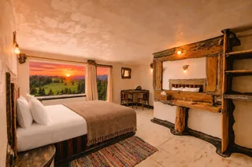
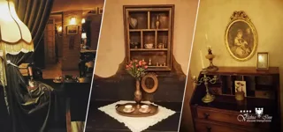
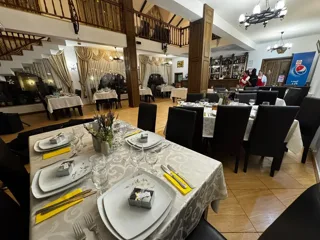

Locații de nuntă în Moieciu de Sus
- locații în director
- 5
- cu cazare în registrul SITUR
- 2
- medie ponderată Google
- 4,6 / 5
- evaluări Google
- 9.556
Cum alegi o locație în Moieciu de Sus
În Moieciu de Sus poți începe comparația cu Amfiteatrul Transilvania (hotel), Pensiunea Nicoleta - Moieciu de Sus (restaurant), Vlahia Inn (bed & breakfast). Aceste proprietăți apar în primele poziții când luăm în calcul împreună nota și numărul de evaluări Google. Salvează adresele care vă interesează pentru a le așeza apoi alături în fișa de comparare a ofertelor.
În fișele proprietăților poți compara dotări concrete la Amfiteatrul Transilvania (grădină, cazare, parcare gratuită), Pensiunea Nicoleta - Moieciu de Sus (cazare, parcare gratuită, parcare accesibilă). Pentru oferta de nuntă, întreabă ce spații și servicii dintre cele prezentate intră în rezervarea privată pentru data voastră.
Dacă vin rude de departe, Pensiunea Nicoleta - Moieciu de Sus are o unitate de cazare asociată în registrul SITUR. Înregistrarea pentru Nicoleta cuprinde 37 de locuri de dormit în 15 spații de cazare. Întreabă câte camere pot fi păstrate pentru aceeași noapte înainte să trimiți invitaților detaliile de rezervare.
Dacă vrei să vezi două proprietăți în aceeași zi, poți continua de la Vlahia Inn spre Restaurant Fundata Cheile Grădiștei din Fundata. Punctele lor sunt la 2,4 km în linie dreaptă. Deschide traseul înainte să fixezi ora celei de-a doua vizite, mai ales dacă grupul se deplasează cu autocarul.
Locații pentru vizionare
Ordinea ține cont de nota Google și de numărul evaluărilor. Cum calculăm ordinea

Fotografie a locației · Sursa fotografiei Moieciu de Sus · Hotel
Amfiteatrul Transilvania
Hotel cu amfiteatru și panoramă montană la Moieciu de Sus, 4,6 din 6.001 de evaluări. Drum pietruit îngust și recenzii critice la restaurant în 2026.
F84J+75, 507131 Moieciu de Sus+40 755 000 999
Fotografie a locației · Sursa fotografiei Moieciu de Sus · Restaurant
Pensiunea Nicoleta - Moieciu de Sus
Pensiunea Nicoleta - Moieciu de Sus. Dacă vreți și o masă de cadouri, întrebați dacă aceasta ia locul uneia dintre cele opt sau poate sta în foișor.
Strada Valea Băngăleasa 138, 507134 Moieciu de Sus+40 745 022 074
Fotografie a locației · Sursa fotografiei Moieciu de Sus · Bed & Breakfast
Vlahia Inn
Vlahia Inn, Moieciu de Sus. Fațada, gardul din lemn și copacii sunt decorați cu lumini, iar în față se vede drumul acoperit cu zăpadă.
Strada Principală 21A, 507134 Moieciu de Sus+40 745 092 192
Fotografie a locației · Sursa fotografiei Moieciu de Sus · Pensiune
Pensiunea Roua Diminetii
Pensiunea Roua Diminetii. Un grup de paisprezece prieteni a închiriat toată vila Roua Dimineții în Moieciu de Sus și povestește despre camere și ciubăr.
Strada Principală 214, 507134 Moieciu de Sus+40 745 892 241
Fotografie a locației · Sursa fotografiei Moieciu de Sus · Bed & Breakfast
Luminiţa
Luminiţa, Moieciu de Sus. La Luminița, o familie își dorea ușă între camere, dar a primit inițial o suită în plan deschis.
Strada Valea Băngăleasa 183, 507134 Moieciu de Sus+40 744 695 111
Întrebări despre locațiile din Moieciu de Sus
Unde pot dormi invitații în Moieciu de Sus?
În registrul de cazare SITUR găsim Pensiunea Nicoleta - Moieciu de Sus (37 de locuri de cazare), Vlahia Inn (30 de locuri de cazare). Verifică ce camere sunt libere pentru noaptea evenimentului.
Ce proprietăți din Moieciu de Sus au grădină sau terasă?
Amfiteatrul Transilvania (grădină). Cere administratorului condițiile de folosire pentru o petrecere privată.
Care locație din Moieciu de Sus are cele mai multe evaluări Google?
Amfiteatrul Transilvania are 6.001 evaluări în profilul Google folosit la documentare. Evaluările acoperă și alte experiențe la proprietate, inclusiv vizitele fără eveniment.
Ce alte localități pot include într-o vizionare lângă Moieciu de Sus?
Cele mai apropiate adrese comparate pe hartă sunt în Fundata, Șimon, Drumul Carului. Găsești mai jos distanțele dintre proprietățile folosite pentru această comparație.
Vizionări în apropiere
- Fundata · 2 locații. Între Vlahia Inn și Restaurant Fundata Cheile Grădiștei sunt 2,4 km în linie dreaptă.
- Șimon · 3 locații. Între Amfiteatrul Transilvania și Hillden Boutique Cazare &Restaurant sunt 2,6 km în linie dreaptă.
- Drumul Carului · 1 locație. Între Amfiteatrul Transilvania și StockEstate Moieciu sunt 3,2 km în linie dreaptă.